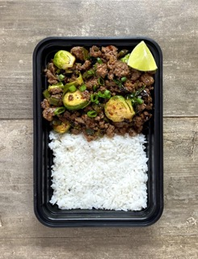

Firecracker Beef & Brussels
Recipe Created By: Josh Cortis

Description
Firecracker Beef & Brussels sprouts served with a side of rice. The firecracker sauce is made using combination of red pepper flakes, hot sauce and honey for a spicy, sweet, and flavor packed bite.
Prep Time
15 Minutes
Cook Time
25 Minutes
Nutrition Info
Per Serving - Makes 5
620kcal | 63g C | 44g P | 21g F
Ingredients
For The Rice
- 3.75 cups (563 g) cooked rice
- 2 tbsp (30 g) lime juice
- 0.25 cup (20 g) chopped cilantro
- salt to taste
For The Beef and Brussels
- 2 lbs (908 g) ground beef (90/10)
- 1 lb (454 g) Brussels sprouts
- 0.5 medium (100 g) onion
- 2 medium (200 g) poblano peppers
- 1 tbsp (15 g) minced garlic
- 1 tbsp (6 g) red pepper flakes
- 4 stalks (20 g) green onions (optional)
- 1 lime (optional)
- 1 tbsp (15 g) oil
For The Sauce
- 0.25 cup (60 g) hot sauce
- 1.5 tbsp (20 g) apple cider vinegar
- 5 tbsp (84 g) honey
- water to thin
Instructions
For The Rice
- Make enough rice to yield 3.75 cups of cooked rice. 1 cup of dry rice will make between 2-3 cups of cooked rice depending on what type of rice you use.
For The Beef And Brussels
- Wash and cut all of your vegetables first.
- Cut the stems off of your Brussels sprouts and remove any of the damaged outer layers. Cut them in half.
- Cut the onion, green onions, and peppers into a small dice. Mince your garlic if you're using fresh.
- Place the Brussels sprout halves into a large bowl and drizzle over ½ tbsp of oil. Season with salt and pepper to your liking.
- Preheat your air fryer to 400°F.
- Place the Brussels sprouts into the air fryer basket and air fry for 5-8 minutes or until they have browned and softened. Watch them closely so they don't burn. If you don't have an air fryer you could cook them in the oven.
- n a large skillet over medium high heat, add ½ tbsp of oil and add the onions, peppers, and 1 of red pepper flakes. Cook for 3-5 minutes to brown and soften. Add in the garlic.
- Move the onions and peppers to the perimeter of the skillet and add in your beef. Season with salt and pepper. Allow the beef to brown.
- When the beef is cooking, prepare your sauce. Mix the honey, hot sauce, vinegar, and cornstarch together. Stir well to incorporate the cornstarch so it doesn't clump up.
- When the beef is about 90% of the way cooked, add in the Brussels sprouts, pour in the sauce and mix into the beef allowing it to thicken. Stir to combine. If you feel that your sauce is too thick, you can drizzle in some water to thin it out.
Plating
- This recipe makes 5 servings. Divide your ingredients evenly into your 5 containers. Each dish gets 0.75 (112g) cup of cooked rice.
- Top each dish with green onions and a lime wedge if you wish. I like to squeeze lime juice over the dish after reheating.